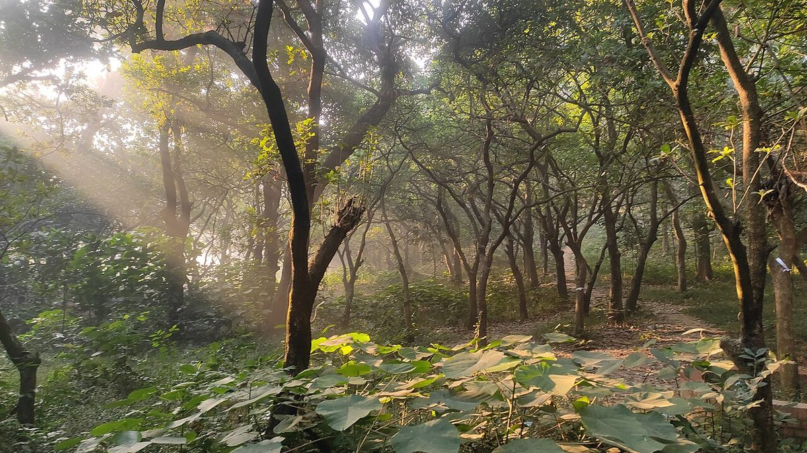
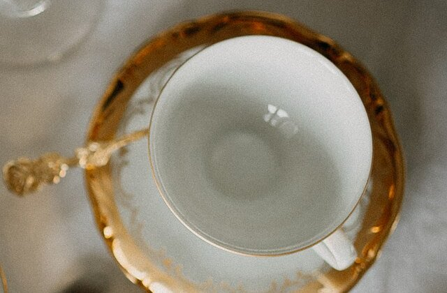
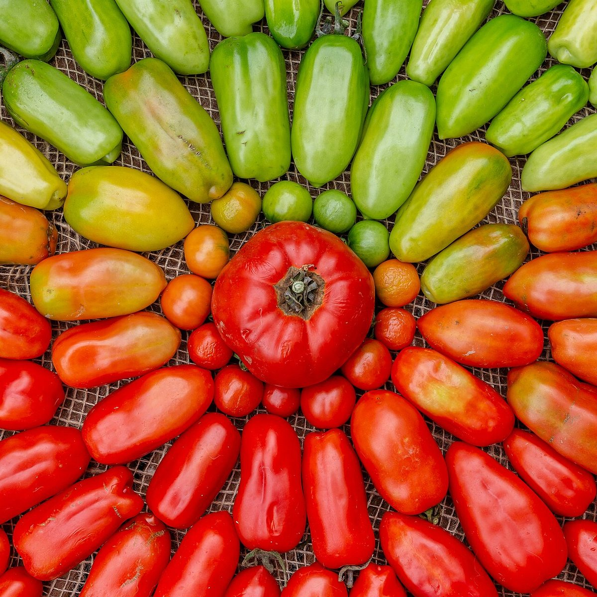
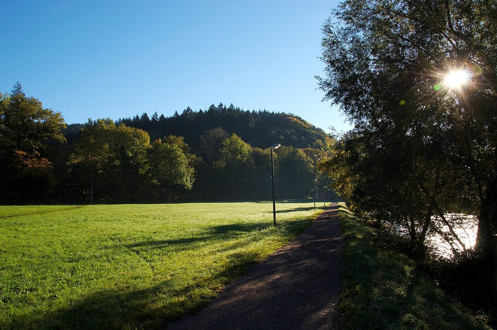
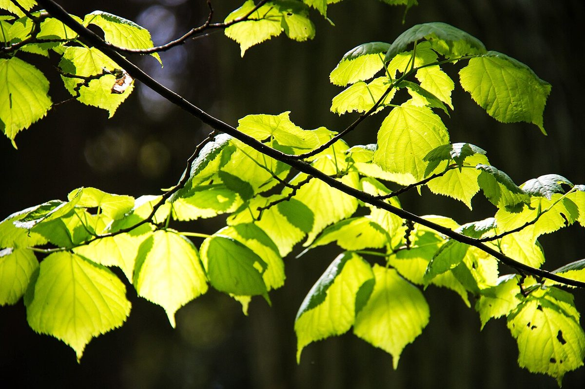

ひと息つく、やわらかい光の食卓
※サイトのイメージとして制作側が考えた案です。


掲載写真はフリー素材のイメージであり、店舗の実際の様子ではありません。他地域で撮影されたものや撮影地が不明なものを含みます。
お店のご案内
- 住所
- 〒311-0402 茨城県日立市入四間町848-6
- 営業時間
- 準備中(お問い合わせください)
定休日・席数・駐車場などもお問い合わせください。


口コミ
イメージ例「気ぜわしい毎日の中で、ほっとひと息つける時間になりました。また足を運びたいと思います。」
これはサイトのイメージをお伝えするための創作例で、実際のお客様の声ではありません。
口コミのページを見る